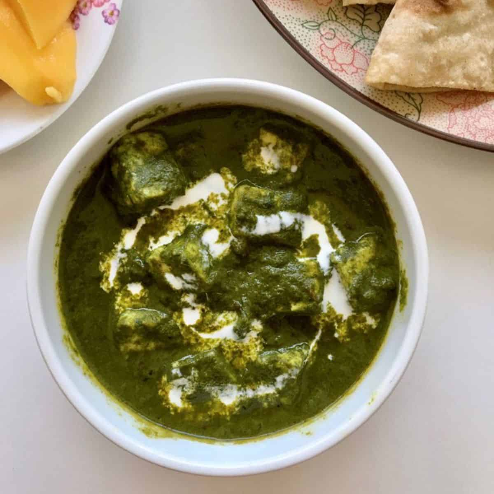
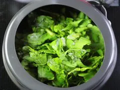
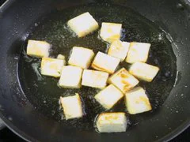
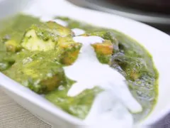

Palak Paneer
About
Palak Paneer is one of the most popular Indian dish made with succulent Paneer cubes (Indian cottage cheese) in a smooth spinach sauce.
Ingredients Required
- Palak
- Paneer
- Garlic
- tomato
- onion
- Indian spices
- Milk Cream
- Salt
- Water
- Oil
Steps To Prepare
- Boil spinach in a pressure cooker and grind it to make palak puree. 
- Heat oil in a pan and fry paneer cubes in it until golden brown. 
- Remove the paneer cubes and put cumin, when it splutters, add bay leaf.
- When it starts to crackle add ginger, garlic and onion paste. Cook until it gets pinkish-brown in color.
- Add salt, garam masala, coriander powder along with red pepper. Stir till well mixed.
- Now, add tomato puree and stir fry over medium heat.
- Add spinach puree and saute for 2-3 minutes.
- Now, add paneer cubes to the mix and turn around a few times to completely mix it with the palak gravy.
- Pour some cream over, mix well and serve hot. 